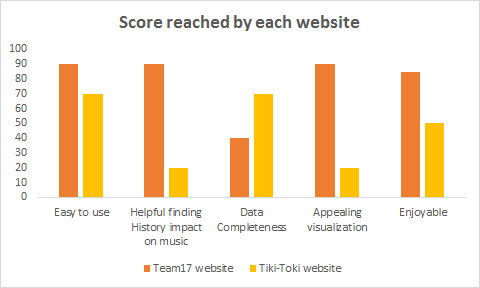

Hi! We are Team 17, from the CSE-6242 class
and this website is our project report.
Auguste Byiringiro, Gireg Miorcec de Kerdanet
Mathieu Lapeyre, Flore Magnard
The Project
Do music tendencies reflect historical events ? This is the question we would like to answer ! Our goal is to analyse different music features across time in order to detect sharp variations reflecting some major historical events and eventually visualize them. Visualisation of historical events thanks to the evolution of music features is an innovative approach. We would like to focus on the 20th century in the USA. Once this is achieved we could expand our visualisation to all Englishspeaking countries. Another improvement would be to add music samples to illustrate the visualization.
So let's see what's going on here !
The Dataset
To answer this problem we need a huge database with a lot of song and also many additional information for a given track.
The Million Song Dataset provides us the main information for one million song:
To fulfill the dataset, we also extract additional data from the musiXmatch dataset (237,662 lyrics) and additional tags for the classification were provided by the lastfm dataset
Date is the key for an historical analysis. The most data we get, the better it is ! Therefore, we also used the spotify API which allow us to get additional date for 13% of the track
Features statistics
Let's now take a look at these features in a much more appealing way. Play with the graph to discover the repartition of our data across the time !
Select feature:
Features scatterplot
Wow this is incredible ! An interactive scatterplot. Here you can view the music features we had to analyse the history. But there is so much more to discover !
x-Axis:
y-Axis:
Genres
Now that you have understood our dataset, it's time for analisis. Let's start with the music genre !
Positive, negative and swear words distribution
This graph shows the evolution of positive, negative, anger, anxiety and swear words in the lyrics across the time. Isn't it awesome!
Emotions evolution
Emotions transmitted in lyrics evolve across the time. 4 different emotions are available: happy, sad, angry and relaxed
Lexical fields
Last but not least, we focus on the evolution of the lexical fields used in lyrics across time.
{kind=link}
{kind=link}
{kind=link}
{kind=link}
{kind=link}
{kind=link}
Conclusion
To evaluate our result we created a survey which compares our website to Tiki-Toki website. 20 people completed this survey. The results are shown below.
{kind=link}